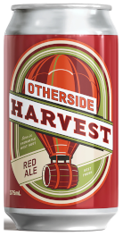

Harvest Red Ale
Otherside Brewing Co.
Myaree, Western Australia
375mL can
5.4% Alc/Vol
A medium bodied, fruitily-hopped red ale with melon and citrus up front, followed by hints of raisin and plum from the caramel malts. This beer is rich and beguiling while maintaining balance, suitable as an accompaniment for a hearty meal or enjoyed on its own.
Otherside Brewing Co. has been on quite a journey - from a one-off brew for a music festival to a rapidly growing “gypsy” brewer - and now we are taking our biggest leap yet with the opening of the Otherside Brewery & Brewhouse.
The production brewery is located at 84 McCoy Street in Myaree (a 1000 square-metre warehouse). While the facility is a serious (sometimes not so serious) working brewery, it will also be a place you can visit and drink our beer at the Otherside Brewhouse. The Brewhouse entrance will be on the Blaikie Street side of the Brewery.